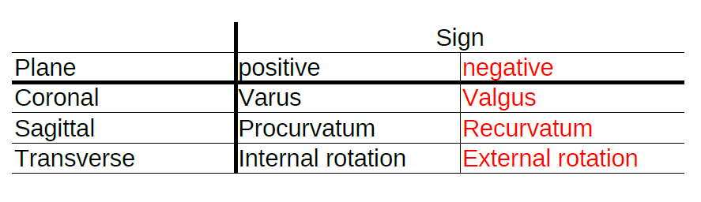

the signs of the angles could be determined with the following table:

Sign definitions
{% filter markdown %}
In the following sign definition examples, the green bone represents the sane tibia (right side of the body). The white left side of the body tibia is bent according to the example of sangeorzan:
* Coronal plane: Varus (positive sign for C = 13 degrees)
* Sagittal plane: Extension (negative sign for S = -19 degrees)
* Transverse plane: Internal rotation (positive sign for T = 10 degrees)
### Coronal Front sign definitions

### Sagittal Front sign definitions

### Transverse sign definitions

The application of the calculation results must follow these guidelines:
### Sign rule for angle Phi
* Start from the coronal plane (0°). From there the positive rotation is defined in **lateral** direction [Sean E. Nork, webinar 23:20](#ref-3).
As a consequence of this rule, the sign of Phi and Beta of the calculation result is correct for the left side of the body bones and changes for the right side of the body bones.
>Left side of the body bone:
>>For the rotation of the cutting plane, the sign rule for angle Phi (Rotation Z) and Beta (Local Rotation Z around Vector k) results in a positive rotation around the Z-axis in the plane of no deformity coordinate system (C1) which is chosen according to [Sangeorzan (Biomech) 1989](#ref-2) Fig. 3.
>Right side of the body bone:
>>For the rotation of the cutting plane, the sign rule for angle Phi and Beta results in a negative rotation around the Z-axis in the plane of no deformity coordinate system (C1) which is chosen according to [Sangeorzan (Biomech) 1989](#ref-2) Fig. 3.
>>Therefore the calculation result values for angle Phi and Beta must be entered with inverse sign into the blender templates for right side of the body bones.
> See [Sangeorzan Example for the right side of the body](#Sangeorzan-Example-for-the-right-side-of-the-body)
The Theta rotation axis is the Y-axis of the C1 coordinate system which has been rotated laterally around Phi. The sign of the Theta calculation result correlates with the positive rotation direction of Y in the laterally rotated C1. Therefore the sign is independent from the side of the body and the Theta sign can be entered unaltered in the blender Osteotomy templates (Rotation Y).
Rotating the distal segment by Beta around vector k compensates bone deflection and torsion. [Dobbe, Med Biol Eng Comput (2011), Fig 2](#ref-4).
{% endfilter %}